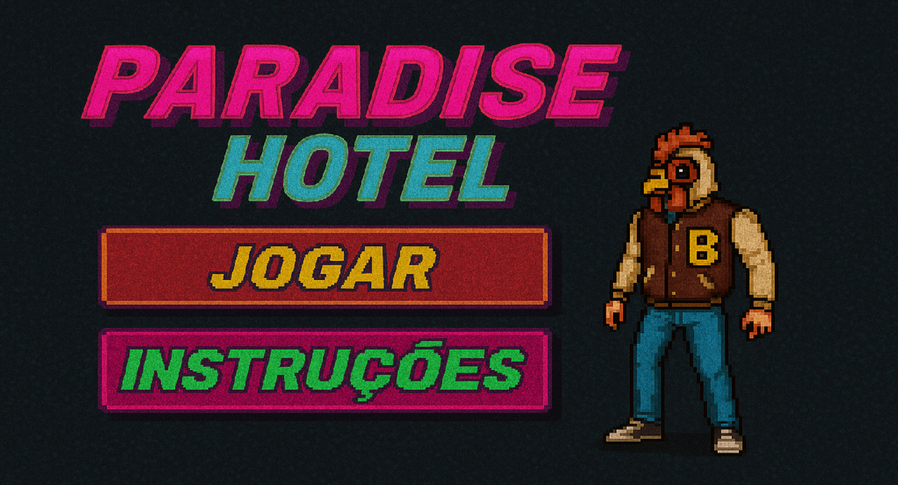

Projetos
Todos os meus projetos estão disponíveis no meu Github, mas tenho alguns destaques.
Paradise Hotel
Este foi um projeto feito em Pygame no começo do curso de Ciência da Computação. Para entender mais, pode acessar esse link.
Prevendo Qual Time de League Of Legends Ganhará a Partida
Este foi um projeto de Ciência dos Dados onde, usando estatística, consegui prever com 80% de precisão qual time ganhará em uma partida de League of Legends.
Mais detalhes estão disponíveis no repositório do projeto.
